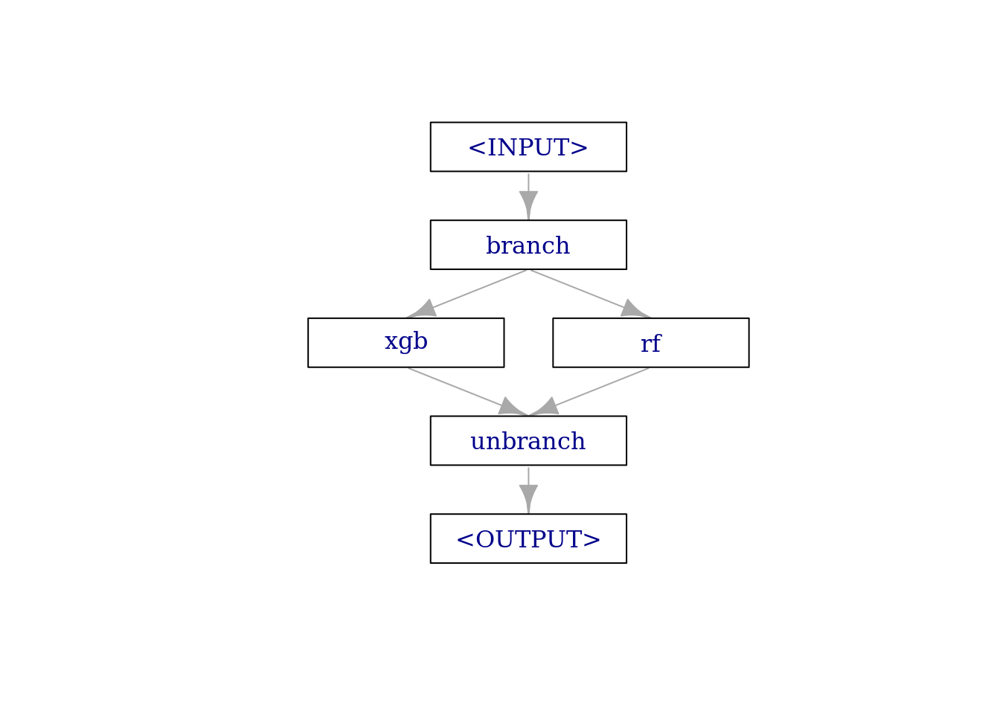
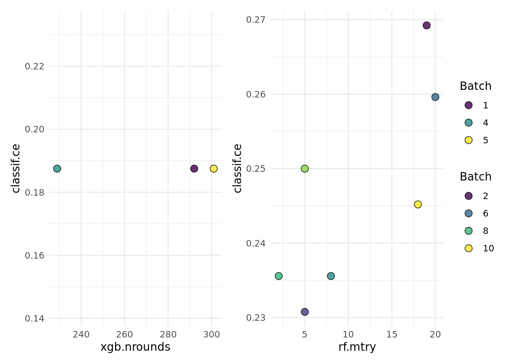

library(mlr3verse)
library(mlr3tuning)
library(mlr3learners)This use case shows how to tune over multiple learners for a single task. You will learn the following:
- Build a pipeline that can switch between multiple learners
- Define the hyperparameter search space for the pipeline
- Run a random or grid search (or any other tuner, always works the same)
- Run nested resampling for unbiased performance estimates
This is an advanced use case. What should you know before:
- mlr3 basics
- mlr3tuning basics, especially
AutoTuner - mlr3pipelines, especially branching
The Setup
Assume, you are given some ML task and what to compare a couple of learners, probably because you want to select the best of them at the end of the analysis. That’s a super standard scenario, it actually sounds so common that you might wonder: Why an (advanced) blog post about this? With pipelines? We will consider 2 cases: (a) Running the learners in their default, so without tuning, and (b) with tuning.
We load the mlr3verse package which pulls in the most important packages for this example. The mlr3learners package loads additional learners.
We initialize the random number generator with a fixed seed for reproducibility, and decrease the verbosity of the logger to keep the output clearly represented.
set.seed(7832)
lgr::get_logger("mlr3")$set_threshold("warn")
lgr::get_logger("bbotk")$set_threshold("warn")Let’s define our learners.
learners = list(
lrn("classif.xgboost", id = "xgb", eval_metric = "logloss"),
lrn("classif.ranger", id = "rf")
)
learners_ids = sapply(learners, function(x) x$id)
task = tsk("sonar") # some random data for this demo
inner_cv2 = rsmp("cv", folds = 2) # inner loop for nested CV
outer_cv5 = rsmp("cv", folds = 5) # outer loop for nested CVDefault Parameters
The Benchmark-Table Approach
Assume we don’t want to perform tuning and or with running all learner in their respective defaults. Simply run benchmark on the learners and the tasks. That tabulates our results nicely and shows us what works best.
grid = benchmark_grid(task, learners, outer_cv5)
bmr = benchmark(grid)
bmr$aggregate(measures = msr("classif.ce")) nr task_id learner_id resampling_id iters classif.ce
1: 1 sonar xgb cv 5 0.2736353
2: 2 sonar rf cv 5 0.1973287
Hidden columns: resample_resultThe Pipelines Approach
Ok, why would we ever want to change the simple approach above - and use pipelines / tuning for this? Three reasons:
- What we are doing with
benchmark()is actually statistically flawed, insofar if we report the error of the numerically best method from the benchmark table as its estimated future performance. If we do that we have “optimized on the CV” (we basically ran a grid search over our learners!) and we know that this is will produce optimistically biased results. NB: This is a somewhat ridiculous criticism if we are going over only a handful of options, and the bias will be very small. But it will be noticeable if we do this over hundreds of learners, so it is important to understand the underlying problem. This is a somewhat subtle point, and this gallery post is more about technical hints for mlr3, so we will stop this discussion here. - For some tuning algorithms, you might have a chance to more efficiently select from the set of algorithms than running the full benchmark. Because of the categorical nature of the problem, you will not be able to learn stuff like “If learner A works bad, I don’t have to try learner B”, but you can potentially save some resampling iterations. Assume you have so select from 100 candidates, experiments are expensive, and you use a 20-fold CV. If learner A has super-bad results in the first 5 folds of the CV, you might already want to stop here. “Racing” would be such a tuning algorithm.
- It helps us to foreshadow what comes later in this post where we tune the learners.
The pipeline just has a single purpose in this example: It should allow us to switch between different learners, depending on a hyperparameter. The pipe consists of three elements:
branchpipes incoming data to one of the following elements, on different data channels. We can name these channel on construction withoptions.- our learners (combined with
gunion()) unbranchcombines the forked paths at the end.
graph =
po("branch", options = learners_ids) %>>%
gunion(lapply(learners, po)) %>>%
po("unbranch")
plot(graph, html = FALSE)
The pipeline has now quite a lot of available hyperparameters. It includes all hyperparameters from all contained learners. But as we don’t tune them here (yet), we don’t care (yet). But the first hyperparameter is special. branch.selection controls over which (named) branching channel our data flows.
graph$param_set$ids() [1] "branch.selection" "xgb.alpha" "xgb.approxcontrib"
[4] "xgb.base_score" "xgb.booster" "xgb.callbacks"
[7] "xgb.colsample_bylevel" "xgb.colsample_bynode" "xgb.colsample_bytree"
[10] "xgb.disable_default_eval_metric" "xgb.early_stopping_rounds" "xgb.early_stopping_set"
[13] "xgb.eta" "xgb.eval_metric" "xgb.feature_selector"
[16] "xgb.feval" "xgb.gamma" "xgb.grow_policy"
[19] "xgb.interaction_constraints" "xgb.iterationrange" "xgb.lambda"
[22] "xgb.lambda_bias" "xgb.max_bin" "xgb.max_delta_step"
[25] "xgb.max_depth" "xgb.max_leaves" "xgb.maximize"
[28] "xgb.min_child_weight" "xgb.missing" "xgb.monotone_constraints"
[31] "xgb.normalize_type" "xgb.nrounds" "xgb.nthread"
[34] "xgb.ntreelimit" "xgb.num_parallel_tree" "xgb.objective"
[37] "xgb.one_drop" "xgb.outputmargin" "xgb.predcontrib"
[40] "xgb.predictor" "xgb.predinteraction" "xgb.predleaf"
[43] "xgb.print_every_n" "xgb.process_type" "xgb.rate_drop"
[46] "xgb.refresh_leaf" "xgb.reshape" "xgb.seed_per_iteration"
[49] "xgb.sampling_method" "xgb.sample_type" "xgb.save_name"
[52] "xgb.save_period" "xgb.scale_pos_weight" "xgb.skip_drop"
[55] "xgb.strict_shape" "xgb.subsample" "xgb.top_k"
[58] "xgb.training" "xgb.tree_method" "xgb.tweedie_variance_power"
[61] "xgb.updater" "xgb.verbose" "xgb.watchlist"
[64] "xgb.xgb_model" "rf.alpha" "rf.always.split.variables"
[67] "rf.class.weights" "rf.holdout" "rf.importance"
[70] "rf.keep.inbag" "rf.max.depth" "rf.min.node.size"
[73] "rf.min.prop" "rf.minprop" "rf.mtry"
[76] "rf.mtry.ratio" "rf.num.random.splits" "rf.num.threads"
[79] "rf.num.trees" "rf.oob.error" "rf.regularization.factor"
[82] "rf.regularization.usedepth" "rf.replace" "rf.respect.unordered.factors"
[85] "rf.sample.fraction" "rf.save.memory" "rf.scale.permutation.importance"
[88] "rf.se.method" "rf.seed" "rf.split.select.weights"
[91] "rf.splitrule" "rf.verbose" "rf.write.forest" graph$param_set$params$branch.selection id class lower upper levels default
1: branch.selection ParamFct NA NA xgb,rf <NoDefault[3]>We can now tune over this pipeline, and probably running grid search seems a good idea to “touch” every available learner. NB: We have now written down in (much more complicated code) what we did before with benchmark.
graph_learner = as_learner(graph)
graph_learner$id = "g"
search_space = ps(
branch.selection = p_fct(c("rf", "xgb"))
)
instance = tune(
tuner = tnr("grid_search"),
task = task,
learner = graph_learner,
resampling = inner_cv2,
measure = msr("classif.ce"),
search_space = search_space
)
as.data.table(instance$archive)[, list(branch.selection, classif.ce)] branch.selection classif.ce
1: rf 0.1778846
2: xgb 0.3269231But: Via this approach we can now get unbiased performance results via nested resampling and using the AutoTuner (which would make much more sense if we would select from 100 models and not 2).
at = auto_tuner(
tuner = tnr("grid_search"),
learner = graph_learner,
resampling = inner_cv2,
measure = msr("classif.ce"),
search_space = search_space
)
rr = resample(task, at, outer_cv5, store_models = TRUE)Access inner tuning result.
extract_inner_tuning_results(rr)[, list(iteration, branch.selection, classif.ce)] iteration branch.selection classif.ce
1: 1 rf 0.2349398
2: 2 rf 0.1626506
3: 3 rf 0.3012048
4: 4 rf 0.2813396
5: 5 rf 0.2932444Access inner tuning archives.
extract_inner_tuning_archives(rr)[, list(iteration, branch.selection, classif.ce, resample_result)] iteration branch.selection classif.ce resample_result
1: 1 rf 0.2349398 <ResampleResult[21]>
2: 1 xgb 0.2469880 <ResampleResult[21]>
3: 2 rf 0.1626506 <ResampleResult[21]>
4: 2 xgb 0.2530120 <ResampleResult[21]>
5: 3 xgb 0.3795181 <ResampleResult[21]>
6: 3 rf 0.3012048 <ResampleResult[21]>
7: 4 xgb 0.3714859 <ResampleResult[21]>
8: 4 rf 0.2813396 <ResampleResult[21]>
9: 5 xgb 0.3353414 <ResampleResult[21]>
10: 5 rf 0.2932444 <ResampleResult[21]>Model-Selection and Tuning with Pipelines
Now let’s select from our given set of models and tune their hyperparameters. One way to do this is to define a search space for each individual learner, wrap them all with the AutoTuner, then call benchmark() on them. As this is pretty standard, we will skip this here, and show an even neater option, where you can tune over models and hyperparameters in one go. If you have quite a large space of potential learners and combine this with an efficient tuning algorithm, this can save quite some time in tuning as you can learn during optimization which options work best and focus on them. NB: Many AutoML systems work in a very similar way.
Define the Search Space
Remember, that the pipeline contains a joint set of all contained hyperparameters. Prefixed with the respective PipeOp ID, to make names unique.
as.data.table(graph$param_set)[, list(id, class, lower, upper, nlevels)] id class lower upper nlevels
1: branch.selection ParamFct NA NA 2
2: xgb.alpha ParamDbl 0 Inf Inf
3: xgb.approxcontrib ParamLgl NA NA 2
4: xgb.base_score ParamDbl -Inf Inf Inf
5: xgb.booster ParamFct NA NA 3
6: xgb.callbacks ParamUty NA NA Inf
7: xgb.colsample_bylevel ParamDbl 0 1 Inf
8: xgb.colsample_bynode ParamDbl 0 1 Inf
9: xgb.colsample_bytree ParamDbl 0 1 Inf
10: xgb.disable_default_eval_metric ParamLgl NA NA 2
11: xgb.early_stopping_rounds ParamInt 1 Inf Inf
12: xgb.early_stopping_set ParamFct NA NA 3
13: xgb.eta ParamDbl 0 1 Inf
14: xgb.eval_metric ParamUty NA NA Inf
15: xgb.feature_selector ParamFct NA NA 5
16: xgb.feval ParamUty NA NA Inf
17: xgb.gamma ParamDbl 0 Inf Inf
18: xgb.grow_policy ParamFct NA NA 2
19: xgb.interaction_constraints ParamUty NA NA Inf
20: xgb.iterationrange ParamUty NA NA Inf
21: xgb.lambda ParamDbl 0 Inf Inf
22: xgb.lambda_bias ParamDbl 0 Inf Inf
23: xgb.max_bin ParamInt 2 Inf Inf
24: xgb.max_delta_step ParamDbl 0 Inf Inf
25: xgb.max_depth ParamInt 0 Inf Inf
26: xgb.max_leaves ParamInt 0 Inf Inf
27: xgb.maximize ParamLgl NA NA 2
28: xgb.min_child_weight ParamDbl 0 Inf Inf
29: xgb.missing ParamDbl -Inf Inf Inf
30: xgb.monotone_constraints ParamUty NA NA Inf
31: xgb.normalize_type ParamFct NA NA 2
32: xgb.nrounds ParamInt 1 Inf Inf
33: xgb.nthread ParamInt 1 Inf Inf
34: xgb.ntreelimit ParamInt 1 Inf Inf
35: xgb.num_parallel_tree ParamInt 1 Inf Inf
36: xgb.objective ParamUty NA NA Inf
37: xgb.one_drop ParamLgl NA NA 2
38: xgb.outputmargin ParamLgl NA NA 2
39: xgb.predcontrib ParamLgl NA NA 2
40: xgb.predictor ParamFct NA NA 2
41: xgb.predinteraction ParamLgl NA NA 2
42: xgb.predleaf ParamLgl NA NA 2
43: xgb.print_every_n ParamInt 1 Inf Inf
44: xgb.process_type ParamFct NA NA 2
45: xgb.rate_drop ParamDbl 0 1 Inf
46: xgb.refresh_leaf ParamLgl NA NA 2
47: xgb.reshape ParamLgl NA NA 2
48: xgb.seed_per_iteration ParamLgl NA NA 2
49: xgb.sampling_method ParamFct NA NA 2
50: xgb.sample_type ParamFct NA NA 2
51: xgb.save_name ParamUty NA NA Inf
52: xgb.save_period ParamInt 0 Inf Inf
53: xgb.scale_pos_weight ParamDbl -Inf Inf Inf
54: xgb.skip_drop ParamDbl 0 1 Inf
55: xgb.strict_shape ParamLgl NA NA 2
56: xgb.subsample ParamDbl 0 1 Inf
57: xgb.top_k ParamInt 0 Inf Inf
58: xgb.training ParamLgl NA NA 2
59: xgb.tree_method ParamFct NA NA 5
60: xgb.tweedie_variance_power ParamDbl 1 2 Inf
61: xgb.updater ParamUty NA NA Inf
62: xgb.verbose ParamInt 0 2 3
63: xgb.watchlist ParamUty NA NA Inf
64: xgb.xgb_model ParamUty NA NA Inf
65: rf.alpha ParamDbl -Inf Inf Inf
66: rf.always.split.variables ParamUty NA NA Inf
67: rf.class.weights ParamUty NA NA Inf
68: rf.holdout ParamLgl NA NA 2
69: rf.importance ParamFct NA NA 4
70: rf.keep.inbag ParamLgl NA NA 2
71: rf.max.depth ParamInt 0 Inf Inf
72: rf.min.node.size ParamInt 1 Inf Inf
73: rf.min.prop ParamDbl -Inf Inf Inf
74: rf.minprop ParamDbl -Inf Inf Inf
75: rf.mtry ParamInt 1 Inf Inf
76: rf.mtry.ratio ParamDbl 0 1 Inf
77: rf.num.random.splits ParamInt 1 Inf Inf
78: rf.num.threads ParamInt 1 Inf Inf
79: rf.num.trees ParamInt 1 Inf Inf
80: rf.oob.error ParamLgl NA NA 2
81: rf.regularization.factor ParamUty NA NA Inf
82: rf.regularization.usedepth ParamLgl NA NA 2
83: rf.replace ParamLgl NA NA 2
84: rf.respect.unordered.factors ParamFct NA NA 3
85: rf.sample.fraction ParamDbl 0 1 Inf
86: rf.save.memory ParamLgl NA NA 2
87: rf.scale.permutation.importance ParamLgl NA NA 2
88: rf.se.method ParamFct NA NA 2
89: rf.seed ParamInt -Inf Inf Inf
90: rf.split.select.weights ParamUty NA NA Inf
91: rf.splitrule ParamFct NA NA 3
92: rf.verbose ParamLgl NA NA 2
93: rf.write.forest ParamLgl NA NA 2
id class lower upper nlevelsWe decide to tune the mtry parameter of the random forest and the nrounds parameter of xgboost. Additionally, we tune branching parameter that selects our learner.
We also have to reflect the hierarchical order of the parameter sets (admittedly, this is somewhat inconvenient). We can only set the mtry value if the pipe is configured to use the random forest (ranger). The same applies for the xgboost parameter.
search_space = ps(
branch.selection = p_fct(c("rf", "xgb")),
rf.mtry = p_int(1L, 20L, depends = branch.selection == "rf"),
xgb.nrounds = p_int(1, 500, depends = branch.selection == "xgb"))Tune the Pipeline with a Random Search
Very similar code as before, we just swap out the search space. And now use random search.
instance = tune(
tuner = tnr("random_search"),
task = task,
learner = graph_learner,
resampling = inner_cv2,
measure = msr("classif.ce"),
term_evals = 10,
search_space = search_space
)
as.data.table(instance$archive)[, list(branch.selection, xgb.nrounds, rf.mtry, classif.ce)] branch.selection xgb.nrounds rf.mtry classif.ce
1: xgb 292 NA 0.1875000
2: rf NA 19 0.2692308
3: rf NA 5 0.2307692
4: xgb 229 NA 0.1875000
5: xgb 301 NA 0.1875000
6: rf NA 20 0.2596154
7: rf NA 8 0.2355769
8: rf NA 2 0.2355769
9: rf NA 5 0.2500000
10: rf NA 18 0.2451923The following shows a quick way to visualize the tuning results.
autoplot(instance, cols_x = c("xgb.nrounds","rf.mtry"))
Nested resampling, now really needed:
rr = tune_nested(
tuner = tnr("grid_search"),
task = task,
learner = graph_learner,
inner_resampling = inner_cv2,
outer_resampling = outer_cv5,
measure = msr("classif.ce"),
term_evals = 10L,
search_space = search_space)Access inner tuning result.
extract_inner_tuning_results(rr)[, list(iteration, branch.selection, classif.ce)] iteration branch.selection classif.ce
1: 1 rf 0.2108434
2: 2 rf 0.1807229
3: 3 rf 0.2289157
4: 4 xgb 0.1915519
5: 5 rf 0.1858147